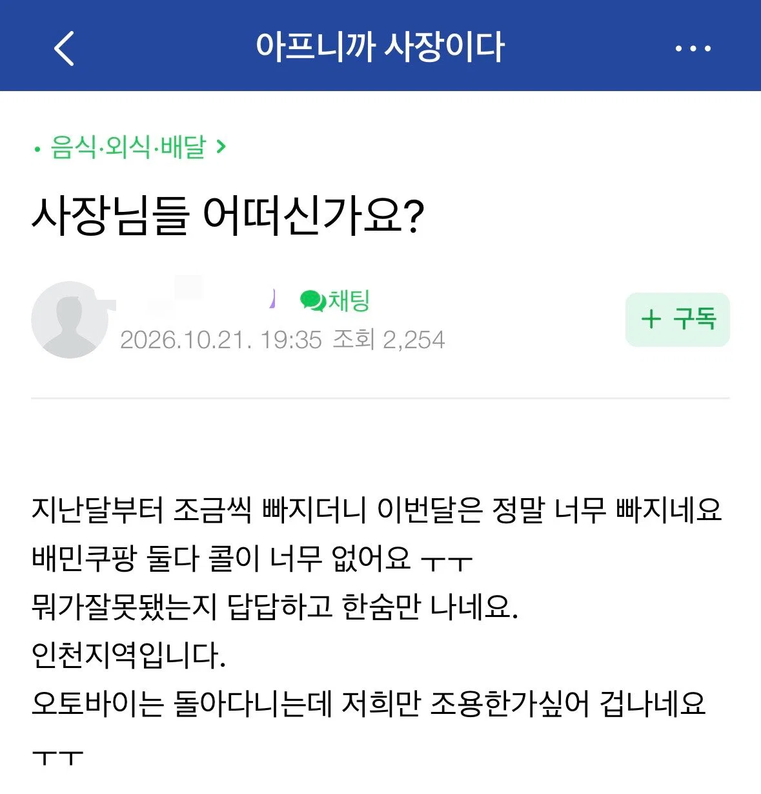
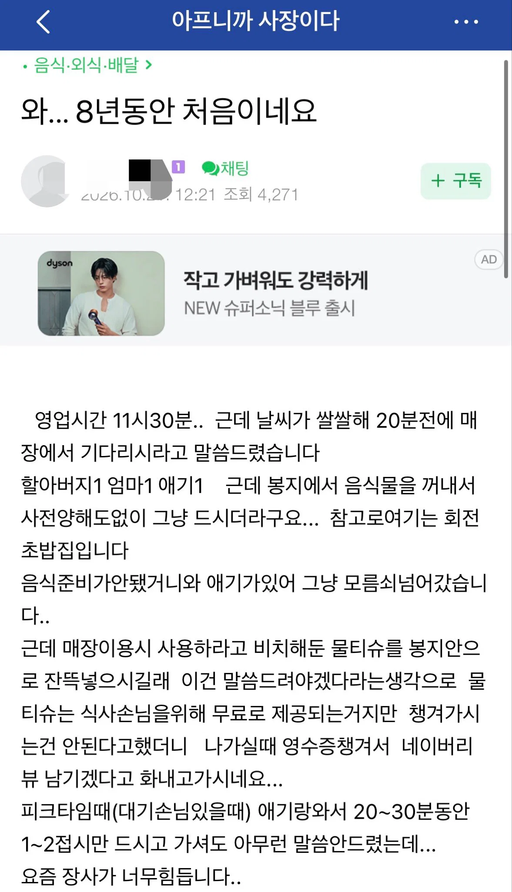
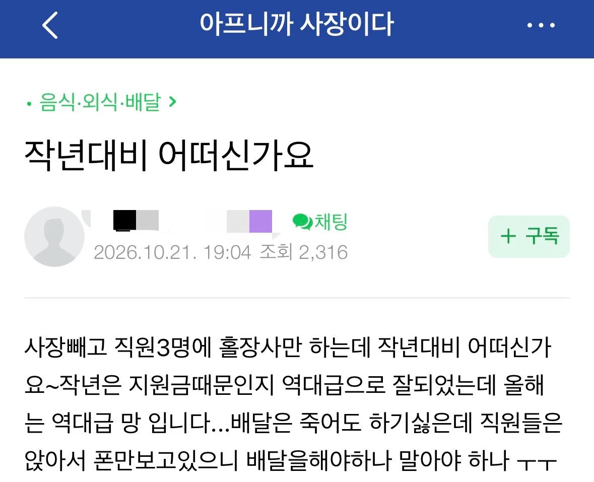
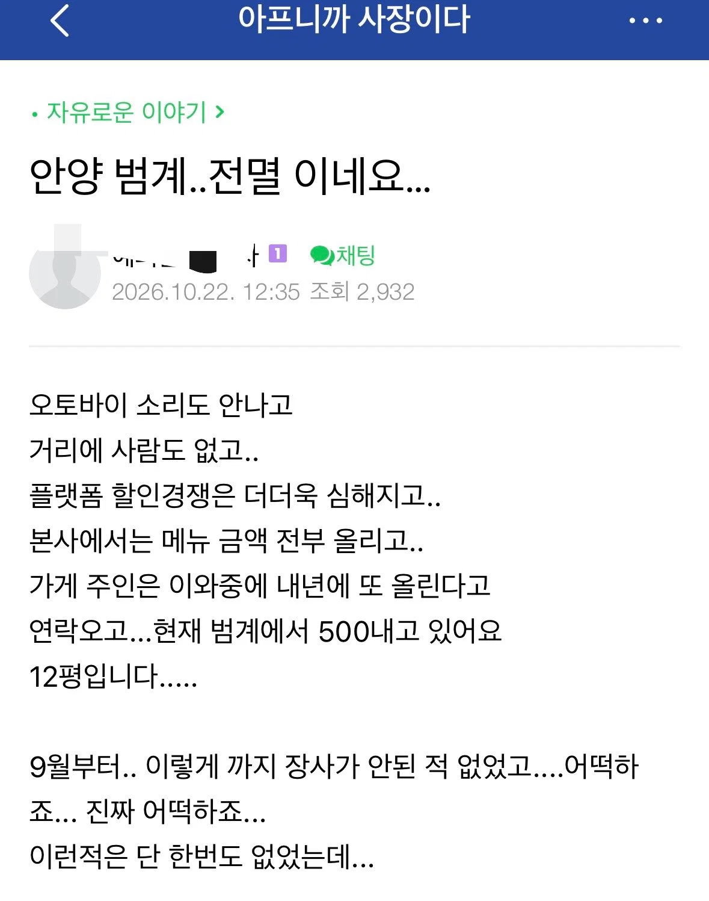
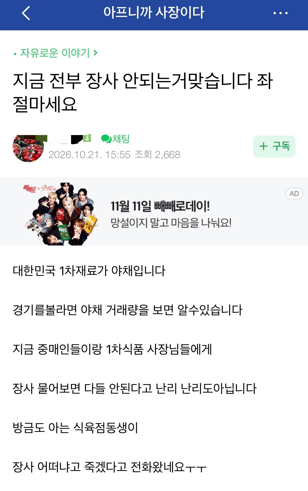

다 부동산에 물려서 가처분 소득이 줄어서 그럼
대출내서 집사라고 떠밀고 둔촌주공 살려준새끼들이 범인이지 뭐
지금까지 부동산 가격 올린건 "계속 오를거라는 신념" 이거 하나인데 이게 꺾이면 무서운게 펼쳐질거임
개나 소나 장사를 하니 문제지
국밥집은 ㅅㅂ 누가 돈사골,사골 육수액기스 쓰면서 장사하라고 했냐고 ㅋㅋ 티안나게쓰면 몰라
육수 끓이기는커녕 콧물같은 액기스 쭉짜고 부속냉동 몇개 태워서 국밥이랍시고 만얼마에 파는데 ㅅㅂ 그걸 내가 왜먹어
마트 납품하는데 마트들도 답없음
다들 다른데도 이렇게 장사 안되냐고 묻는다
역대급 불황이여
내가 맛집만 찾아가서그런가 맨날 웨이팅인데
미장 국장 다 폭락해서 반의반토막 나야 미수땡겨서 레버리지 들어간놈들 다 청산하고, 거기묶인돈 풀려서 나라가 정상화되지 ㅋㅋㅋㅋㅋ
정말 궁금해서 그러는건데 청산되면 거기 묶인돈이 어떻게 풀린다는거임?? 걔들이 청산되면 오히려 저기서 사먹을 사람이 줄어드는거 아니야? 태클아니고 ㄹㅇ 경제구조가 궁금해서 그러는것
주식시장에 들어간 돈이 빠져 나와서 실물 경제를 돌리니깐 하는 말인듯. 전산에 숫자로 찍혀있는 돈을 현실에서 쓰라는 말이겠지
긍까 그게 청산되면 쓸돈도 없어지느건데 어케 굴러가냐는거임
청산될정도 문제가 생기면 더이상 투자를 안할태니 그돈들이 풀린다는 뜻인거였나?
위에 부동산이 폭락해야 돈이 풀리고 내수가 정상화된다는 븅신들 있어서, 그게 맞으면 주식폭락해도 내수활성화가 되어야된다는 뜻으로 주식가지고 똑같이 써본거 ㅇㅇ
당연히 부동산이든 주식이든 폭락하는게 실물경제에 긍정적일리가 없지 ㅋㅋ
아하 돌리는거구나 ㅇㅋㅇㅋㅋ ㅋㅋ
솔직히 유튜브 깔짝보고 배운놈이 만드는거랑 비비는 음식으로 장사한다는게 이상하다고 생각해요..
특히 키트 떼다가 데워파는 분들은 빨리 망해서 진짜 요리사 쓰는집만 남으면 좋겠어요..
12평에 500이면 좀 에바네 12평에 회전율 웬만큼 높여봐야 밥집이면 점심저녁이 다인데 객단가에 마진에 인건비에 생각해보면 진짜 눈코뜰새없이 풀로 줄서서 먹어야 겨우 사장인건비 나오겠는데 몇년마다 인테리어도 고쳐야되고 돈들일은 많은데 빚내서 가게차려서 이자 내가면서 장사해서 저런식이면...깜깜하다.
범계에서 12평에 500이면 번화가에서 개꿀통자리인가봄
그게아니면 나올수없는 가격대긴함
태평성대에 이런글 올리는 의도가 뭐임
자영업자만 문제가 있는게 아니고 일반 사업하는사람들도 지금 다 죽을맛일건데..
원래 금융시장 조지면 외식부터 줄임 가장 효과적이거든
애초에 인구수가 많이 줄어든것도 원인중에 하나임
그래서 난 내가 좋아하는 식당 주에 1회 이상 가고 네이버에 리뷰도 꼭 남김 안 망했으면 좋겠어서
내가 좋아하는 동네맛집은 이미 망하기직전임...
어케 소생해보려고 했는데 안되더라
한국이 고도성장기라서 다 되던것들중 하나가 자영업같음.
다른 OECD국가에서 자영업이 낮은 이유도 그렇고
가격이 문제지 뭐
예전처럼 시켜먹으면 식비 감당이 안돼..
오프라인은 맛 떠나서 인스타장사 하는 곳이 잘되고
배달도 맛 떠나서 리뷰장사 하는 곳이 잘됨
가계 소비가 자체가 줄었음.
근데 여기서 뭐 집에서 만들어 먹는데 더 싸다 이런 애들은 '편하게 먹는 비용 1.4만원..결혼은 하셨는지??' 이거 생각나게 하넼ㅋㅋㅋ
힘들긴해
걍 본인들 음식 퀄리티를 생각해보지